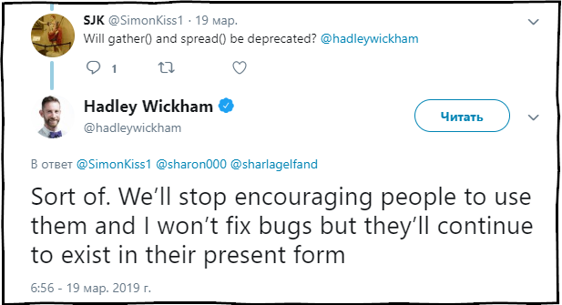
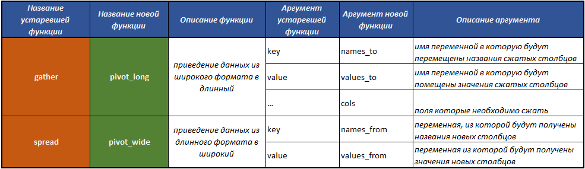
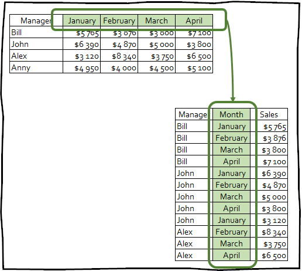
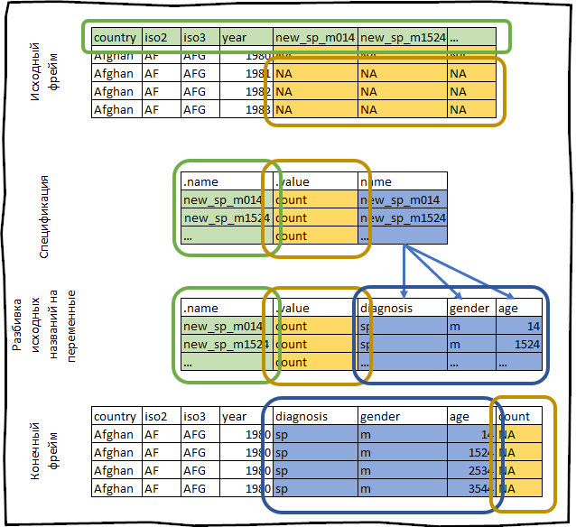
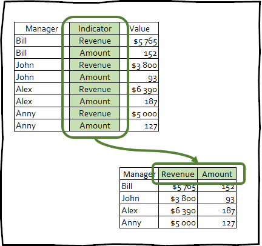

R пакет tidyr и его новые функции pivot_longer и pivot_wider
Пакет tidyr входит в ядро одной из наиболее популярных библиотек на языке R — tidyverse.
Основное назначение пакета — приведение данных к аккуратному виду.
На Хабре уже есть публикация посвящённая данному пакету, но датируюется она 2015 годом. А я хочу рассказать, о наиболее актуальных изменениях, о которых несколько дней назад сообщил его автор Хедли Викхем.

SJK: Функции gather() и spread() будут считаться устаревшими?
Hadley Wickham: В какой то мере. Мы перестанем рекомендовать использование данных функций, и исправлять в них ошибки, но они и далее буду присутствовать в пакете в текущем состоянии.
Содержание
- Концепция TidyData
- Основные функции входящие в пакет tidyr
- Новая концепция преобразования данных из широкого формата в длинный и наоборот
- Установка наиболее актуальной версии tidyr 0.8.3.9000
- Переход на новые функции
- Простой пример преобразования данных из широкого формата в длинный
- Спецификации
- Спецификация с использованием нескольких значений(.value)
- Преобразование дата фреймов из длинного формата к широкому
- Простейший пример приведения таблицы к широкому формату
- Генерация имени столбца из нескольких исходных переменных
- Несколько продвинутых примеров работы с новой концепцией tidyr
- Приведение данных к аккуратному виду на примере набора данных о переписи дохода и арендной платы в США
- Всемирный банк
- Список контактов
- Заключение
Впервые статья была опубликована на Хабре
Концепция TidyData
Цель tidyr — помочь вам привести данные к так называемому аккуратному виду. Аккуратные данные — это данные, где:
- Каждая переменная находится в столбце.
- Каждое наблюдение — это строка.
- Каждое значение является ячейкой.
С данными которые приведены к tidy data значительно проще и удобнее работать при проведении анализа.
Основные функции входящие в пакет tidyr
tidyr содержит набор функции предназначенных для трансформации таблиц:
fill()— заполнение пропущенных значений в столбце, предыдущими значениями;separate()— разбивает одно поле на несколько через разделитель;unite()— совершает операцию объединения нескольких полей в одно, действие обратное функцииseparate();pivot_longer()— функция, преобразующая данные из широкого формата в длинный;pivot_wider()— функция, преобразующая данные из длинного формата в широкий. Операция обратная той, которую осуществляет функцияpivot_longer().gather()устаревшая — функция, преобразующая данные из широкого формата в длинный;spread()устаревшая — функция, преобразующая данные из длинного формата в широкий. Операция обратная той, которую осуществляет функцияgather().
Новая концепция преобразования данных из широкого формата в длинный и наоборот
Ранее для подобного рода трансформации использовались функции gather() и spread(). За годы существования этих функций стало очевидно, что для большинства пользователей, включая автора пакета, названия этих функций, и их аргументов были достаточно не очевидны, и вызывали сложности при их поиске и понимании того, какая из этих функций приводит дата фрейм из широко в длинный формат, и наоборот.
В связи с чем в tidyr были добавлены две новые, важные функции, которые предназначены для трансформации дата фреймов.
Новые функции pivot_longer() и pivot_wider() были созданы под впечатлением от некоторых функций из пакета cdata, созданного Джоном Маунтом и Ниной Зумель.
Установка наиболее актуальной версии tidyr 0.8.3.9000
Для установки новой, наиболее актуальной версии пакета tidyr 0.8.3.9000, в которой доступны новые функции, воспользуйтесь следующим кодом.
devtools::install_github("tidyverse/tidyr")
На момент написания статьи эти функции доступны только в dev версии пакета на GitHub.
Переход на новые функции
На самом деле перевести старые скрипты на работу с новыми функциями несложно, для большего понимания, я возьму пример из документации старых функций и покажу как эти же операции выполняются с помощью новых pivot_*() функций.
Преобразование широкого формата к длинному.
Пример кода из документации функции gather
# example
library(dplyr)
stocks <- data.frame(
time = as.Date('2009-01-01') + 0:9,
X = rnorm(10, 0, 1),
Y = rnorm(10, 0, 2),
Z = rnorm(10, 0, 4)
)
# old
stocks_gather <- stocks %>% gather(key = stock,
value = price,
-time)
# new
stocks_long <- stocks %>% pivot_longer(cols = -time,
names_to = "stock",
values_to = "price")
Преобразование длинного формата к широкому.
Пример кода из документации функции spread
# old
stocks_spread <- stocks_gather %>% spread(key = stock,
value = price)
# new
stock_wide <- stocks_long %>% pivot_wider(names_from = "stock",
values_from = "price")
Т.к. в приведённых выше примерах работы с pivot_longer() и pivot_wider(), в исходной таблице stocks нет столбцов перечисленных в аргументах names_to и values_to их имена необходимо указывать в кавычках.
Таблица с помощью которой вам наиболее просто будет разобраться с тем, как перейти на работу с новой концепцией tidyr.

Примечание от автора
Весь приведённый далее текст является адаптивным, я бы даже сказал свободным переводом виньетки с официального сайта библиотеки tidyverse.
Простой пример преобразования данных из широкого формата в длинный
pivot_longer () — делает наборы данных длиннее, уменьшая количество столбцов и увеличивая количество строк.

Для выполнения примеров, представленных в статье изначально необходимо подключить нужные пакеты:
library(tidyr)
library(dplyr)
library(readr)
Допустим у нас есть таблица c результатами опроса, в котором (среди прочего) спрашивали людей об их религии и годовом доходе:
#> # A tibble: 18 x 11
#> religion `<$10k` `$10-20k` `$20-30k` `$30-40k` `$40-50k` `$50-75k`
#> <chr> <dbl> <dbl> <dbl> <dbl> <dbl> <dbl>
#> 1 Agnostic 27 34 60 81 76 137
#> 2 Atheist 12 27 37 52 35 70
#> 3 Buddhist 27 21 30 34 33 58
#> 4 Catholic 418 617 732 670 638 1116
#> 5 Don’t k… 15 14 15 11 10 35
#> 6 Evangel… 575 869 1064 982 881 1486
#> 7 Hindu 1 9 7 9 11 34
#> 8 Histori… 228 244 236 238 197 223
#> 9 Jehovah… 20 27 24 24 21 30
#> 10 Jewish 19 19 25 25 30 95
#> # … with 8 more rows, and 4 more variables: `$75-100k` <dbl>,
#> # `$100-150k` <dbl>, `>150k` <dbl>, `Don't know/refused` <dbl>
Эта таблица содержит данные о религии респондентов в строках, а уровень дохода разбросан по именам столбцов. Количество респондентов из каждой категории хранится в значениях ячеек на пересечении религии и уровня дохода. Чтобы привести таблицу к аккуратному, правильному формату, достаточно использовать pivot_longer():
pew %>%
pivot_longer(cols = -religion, names_to = "income", values_to = "count")
pew %>%
pivot_longer(cols = -religion, names_to = "income", values_to = "count")
#> # A tibble: 180 x 3
#> religion income count
#> <chr> <chr> <dbl>
#> 1 Agnostic <$10k 27
#> 2 Agnostic $10-20k 34
#> 3 Agnostic $20-30k 60
#> 4 Agnostic $30-40k 81
#> 5 Agnostic $40-50k 76
#> 6 Agnostic $50-75k 137
#> 7 Agnostic $75-100k 122
#> 8 Agnostic $100-150k 109
#> 9 Agnostic >150k 84
#> 10 Agnostic Don't know/refused 96
#> # … with 170 more rows
Аргументы функции pivot_longer()
- Первый аргумент cols, описывает, какие столбцы необходимо объеденить. В данном случае все столбцы, кроме time.
- Аргумент names_to дает имя переменной, которая будет создана из имён столбцов, которые мы объединили.
- values_to дает имя переменной, которая будет создана из данных, хранящихся в значениях ячеек объединённых столбцов.
Спецификации
Это новый функционал пакета tidyr, который ранее при работе с устаревшими функциями был недоступен.
Спецификация — это фрейм данных, каждая строка которого соответствует одному столбцу в новом выходном дата фрейме, и двумя специальными столбцами, которые начинаются с.:
- .name содержит исходное название столбца.
- .value содержит имя столбца, в который будут входить значения ячеек.
Остальные столбцы спецификации отражают то, как в новом столбце будет выводиться название сжимаемых столбцов из .name.
Спецификация описывает метаданные, хранящиеся в имени столбца, с одной строкой для каждого столбца и одним столбцом для каждой переменной, объединенной с именем столбца, наверное сейчас такое определение кажется запутанным, но после рассмотрения нескольких примеров всё станет значительно понятнее.
Смысл спецификации заключается в том, что вы можете извлекать, изменять и задавать новые метаданные к преобразуемому датафрейму.
Для работы со спецификациями при преобразовании таблицы из широкого формата в длинный служит функция pivot_longer_spec().
Как эта функция работает, она берёт любой дата фрейм, и формирует его метаданные описанным выше образом.
Для примера давайте возмём набор данных who, который предоставляется вместе с пакетом tidyr. Этот набор данных содержит информацию предоставляемую международной организацией здравоохранения о заболеваемости туберкулёзом.
who
#> # A tibble: 7,240 x 60
#> country iso2 iso3 year new_sp_m014 new_sp_m1524 new_sp_m2534
#> <chr> <chr> <chr> <int> <int> <int> <int>
#> 1 Afghan… AF AFG 1980 NA NA NA
#> 2 Afghan… AF AFG 1981 NA NA NA
#> 3 Afghan… AF AFG 1982 NA NA NA
#> 4 Afghan… AF AFG 1983 NA NA NA
#> 5 Afghan… AF AFG 1984 NA NA NA
#> 6 Afghan… AF AFG 1985 NA NA NA
#> 7 Afghan… AF AFG 1986 NA NA NA
#> 8 Afghan… AF AFG 1987 NA NA NA
#> 9 Afghan… AF AFG 1988 NA NA NA
#> 10 Afghan… AF AFG 1989 NA NA NA
#> # … with 7,230 more rows, and 53 more variables
Построим его спецификацию.
spec <- who %>%
pivot_longer_spec(new_sp_m014:newrel_f65, values_to = "count")
#> # A tibble: 56 x 3
#> .name .value name
#> <chr> <chr> <chr>
#> 1 new_sp_m014 count new_sp_m014
#> 2 new_sp_m1524 count new_sp_m1524
#> 3 new_sp_m2534 count new_sp_m2534
#> 4 new_sp_m3544 count new_sp_m3544
#> 5 new_sp_m4554 count new_sp_m4554
#> 6 new_sp_m5564 count new_sp_m5564
#> 7 new_sp_m65 count new_sp_m65
#> 8 new_sp_f014 count new_sp_f014
#> 9 new_sp_f1524 count new_sp_f1524
#> 10 new_sp_f2534 count new_sp_f2534
#> # … with 46 more rows
Поля country, iso2, iso3 уже являются переменными. Наша задача перевернуть столбцы с new_sp_m014 по newrel_f65.
В названиях этих столбцов хранится следующая информация:
- Префикс
new_говорит о том, что столбец содержит данные о новых случаях заболевания туберкулёом, текущий дата фрейм содержит информацию только по новым заболеваниям, поэтому данный префикс в текущем контексте не несёт никакой смысловой нагрузки. sp/rel/sp/epописывает способ диагностики заболевания.m/fпол пациента.014/1524/2535/3544/4554/65возрастной диапазон пациента.
Мы можем разделить эти столбцы с помощью функции extract(), используя регулярное выражение.
spec <- spec %>%
extract(name, c("diagnosis", "gender", "age"), "new_?(.*)_(.)(.*)")
#> # A tibble: 56 x 5
#> .name .value diagnosis gender age
#> <chr> <chr> <chr> <chr> <chr>
#> 1 new_sp_m014 count sp m 014
#> 2 new_sp_m1524 count sp m 1524
#> 3 new_sp_m2534 count sp m 2534
#> 4 new_sp_m3544 count sp m 3544
#> 5 new_sp_m4554 count sp m 4554
#> 6 new_sp_m5564 count sp m 5564
#> 7 new_sp_m65 count sp m 65
#> 8 new_sp_f014 count sp f 014
#> 9 new_sp_f1524 count sp f 1524
#> 10 new_sp_f2534 count sp f 2534
#> # … with 46 more rows
Обратите внимание, столбец .name должен оставаться неизменным, так как это наш индекс в именах столбцов исходного набора данных.
Пол и возраст (столбцы gender и age) имеют фиксированные и известные значения, поэтому рекомендуется преобразовывать эти столбцы в факторы:
spec <- spec %>%
mutate(
gender = factor(gender, levels = c("f", "m")),
age = factor(age, levels = unique(age), ordered = TRUE)
)
Наконец для того, чтобы применить созданную нами спецификацию к исходному дата фрейму who нам необходимо использовать аргумент spec в функции pivot_longer().
who %>% pivot_longer(spec = spec)
#> # A tibble: 405,440 x 8
#> country iso2 iso3 year diagnosis gender age count
#> <chr> <chr> <chr> <int> <chr> <fct> <ord> <int>
#> 1 Afghanistan AF AFG 1980 sp m 014 NA
#> 2 Afghanistan AF AFG 1980 sp m 1524 NA
#> 3 Afghanistan AF AFG 1980 sp m 2534 NA
#> 4 Afghanistan AF AFG 1980 sp m 3544 NA
#> 5 Afghanistan AF AFG 1980 sp m 4554 NA
#> 6 Afghanistan AF AFG 1980 sp m 5564 NA
#> 7 Afghanistan AF AFG 1980 sp m 65 NA
#> 8 Afghanistan AF AFG 1980 sp f 014 NA
#> 9 Afghanistan AF AFG 1980 sp f 1524 NA
#> 10 Afghanistan AF AFG 1980 sp f 2534 NA
#> # … with 405,430 more rows
Всё, что мы только что сделали, схематично можно изобразить следующим образом:

Спецификация с использованием нескольких значений(.value)
В приведённом выше примере столбец спецификации .value содержал только одно значение, в большинстве случаев это так и бывает.
Но изредка может возникнуть ситуация, когда вам необходимо собрать в значениях данные из столбцов с разными типами данных. С помощью устаревшей функции spread() это было бы сделать довольно сложно.
Приведённый ниже пример заимствован из виньетки к пакету data.table.
Давайте создадим тренировачный датафрейм.
family <- tibble::tribble(
~family, ~dob_child1, ~dob_child2, ~gender_child1, ~gender_child2,
1L, "1998-11-26", "2000-01-29", 1L, 2L,
2L, "1996-06-22", NA, 2L, NA,
3L, "2002-07-11", "2004-04-05", 2L, 2L,
4L, "2004-10-10", "2009-08-27", 1L, 1L,
5L, "2000-12-05", "2005-02-28", 2L, 1L,
)
family <- family %>% mutate_at(vars(starts_with("dob")), parse_date)
#> # A tibble: 5 x 5
#> family dob_child1 dob_child2 gender_child1 gender_child2
#> <int> <date> <date> <int> <int>
#> 1 1 1998-11-26 2000-01-29 1 2
#> 2 2 1996-06-22 NA 2 NA
#> 3 3 2002-07-11 2004-04-05 2 2
#> 4 4 2004-10-10 2009-08-27 1 1
#> 5 5 2000-12-05 2005-02-28 2 1
Созданный дата фрейм в каждой строке содержит данные о детях одной семьи. В семьях может быть один или два ребёнка. По каждому ребёнку предоставляется данные о дате рождения и поле, причём данные по каждому ребёнку идут в отдельных столбцах, наша задача привести эти данные к правильному для анализа формату.
Обратите внимание, что у нас есть две переменные с информацией о каждом ребенке: его пол и дата рождения (столбцы с префиксом dop содержат дату рождения, столбцы с префиксом gender содержат пол ребёнка). В ожидаемом результате они должны идти в отдельных столбцах. Мы можем сделать это, генерируя спецификацию, в которой столбец .value будет иметь два разных значения.
spec <- family %>%
pivot_longer_spec(-family) %>%
separate(col = name, into = c(".value", "child"))%>%
mutate(child = parse_number(child))
#> # A tibble: 4 x 3
#> .name .value child
#> <chr> <chr> <dbl>
#> 1 dob_child1 dob 1
#> 2 dob_child2 dob 2
#> 3 gender_child1 gender 1
#> 4 gender_child2 gender 2
Итак, давайте разберём по шагам действия, которые выполняются приведённым выше кодом.
pivot_longer_spec(-family)— создаём спецификацию, которая сжимает все имеющиеся столбцы, кроме столбца family.separate(col = name, into = c(".value", "child"))— разделяем столбец .name, который содержит имена исходных полей, по нижнему подчёркиванию и заносим полученные значения в столбцы .value и child.mutate(child = parse_number(child))— преобразуем значения поля child из текстового в числовой тип данных.
Теперь мы можем применить к изначальному датафрейму полученную спецификацию, и привести таблицу к желаемому виду.
family %>%
pivot_longer(spec = spec, na.rm = T)
#> # A tibble: 9 x 4
#> family child dob gender
#> <int> <dbl> <date> <int>
#> 1 1 1 1998-11-26 1
#> 2 1 2 2000-01-29 2
#> 3 2 1 1996-06-22 2
#> 4 3 1 2002-07-11 2
#> 5 3 2 2004-04-05 2
#> 6 4 1 2004-10-10 1
#> 7 4 2 2009-08-27 1
#> 8 5 1 2000-12-05 2
#> 9 5 2 2005-02-28 1
Мы используем аргумент na.rm = TRUE, потому, что текущая форма данных вынуждает создавать лишние строки для несуществующих наблюдений. Т.к. у семьи 2 есть всего один ребёнок, na.rm = TRUEгарантирует, что семья 2 будет иметь одну строку в выходных данных.
Преобразование дата фреймов из длинного формата к широкому
pivot_wider() — является обратным преобразованием, и наоборот увеличивает количество столбцов дата фрейма за счёт уменьшения количества строк.

Такого рода преобразование крайне редко используется для приведения данных к аккуратному виду, тем не менее этот приём может быть полезен для создания сводных таблиц используемых в презентациях, или для интеграции с какими либо другими инструментами.
На самом деле функции pivot_longer() и pivot_wider() являются симметричными, и производят обратные друг другу действия, т.е: df %>% pivot_longer(spec = spec) %>% pivot_wider(spec = spec)и df %>% pivot_wider(spec = spec) %>% pivot_longer(spec = spec) вернёт исходный df.
Простейший пример приведения таблицы к широкому формату
Для демострации работы функции pivot_wider() мы будем использовать набор данных fish_encounters, в котором хранится информация о том, как различные станции фиксируют передвижение рыб по реке.
#> # A tibble: 114 x 3
#> fish station seen
#> <fct> <fct> <int>
#> 1 4842 Release 1
#> 2 4842 I80_1 1
#> 3 4842 Lisbon 1
#> 4 4842 Rstr 1
#> 5 4842 Base_TD 1
#> 6 4842 BCE 1
#> 7 4842 BCW 1
#> 8 4842 BCE2 1
#> 9 4842 BCW2 1
#> 10 4842 MAE 1
#> # … with 104 more rows
В большинстве случаев, эта таблица будет более информативной и удобна в использовании если представить информации по каждой станции в отдельном столбце.
fish_encounters %>% pivot_wider(names_from = station, values_from = seen)
fish_encounters %>% pivot_wider(names_from = station, values_from = seen)
#> # A tibble: 19 x 12
#> fish Release I80_1 Lisbon Rstr Base_TD BCE BCW BCE2 BCW2 MAE
#> <fct> <int> <int> <int> <int> <int> <int> <int> <int> <int> <int>
#> 1 4842 1 1 1 1 1 1 1 1 1 1
#> 2 4843 1 1 1 1 1 1 1 1 1 1
#> 3 4844 1 1 1 1 1 1 1 1 1 1
#> 4 4845 1 1 1 1 1 NA NA NA NA NA
#> 5 4847 1 1 1 NA NA NA NA NA NA NA
#> 6 4848 1 1 1 1 NA NA NA NA NA NA
#> 7 4849 1 1 NA NA NA NA NA NA NA NA
#> 8 4850 1 1 NA 1 1 1 1 NA NA NA
#> 9 4851 1 1 NA NA NA NA NA NA NA NA
#> 10 4854 1 1 NA NA NA NA NA NA NA NA
#> # … with 9 more rows, and 1 more variable: MAW <int>
Этот набор данных записывает информацию только в тех случаях, когда рыба была обнаружена станцией, т.е. если какая либо рыба не была зафиксированной какой то станцией, то этих данных в таблице не будет. Это означает, что выходные данные будут заполнены NA.
Однако в этом случае мы знаем, что отсутствие записи означает, что рыба не была замечена, поэтому мы можем использовать аргумент values_fill в функции pivot_wider() и заполнить эти пропущенные значения нулями:
fish_encounters %>% pivot_wider(
names_from = station,
values_from = seen,
values_fill = list(seen = 0)
)
#> # A tibble: 19 x 12
#> fish Release I80_1 Lisbon Rstr Base_TD BCE BCW BCE2 BCW2 MAE
#> <fct> <int> <int> <int> <int> <int> <int> <int> <int> <int> <int>
#> 1 4842 1 1 1 1 1 1 1 1 1 1
#> 2 4843 1 1 1 1 1 1 1 1 1 1
#> 3 4844 1 1 1 1 1 1 1 1 1 1
#> 4 4845 1 1 1 1 1 0 0 0 0 0
#> 5 4847 1 1 1 0 0 0 0 0 0 0
#> 6 4848 1 1 1 1 0 0 0 0 0 0
#> 7 4849 1 1 0 0 0 0 0 0 0 0
#> 8 4850 1 1 0 1 1 1 1 0 0 0
#> 9 4851 1 1 0 0 0 0 0 0 0 0
#> 10 4854 1 1 0 0 0 0 0 0 0 0
#> # … with 9 more rows, and 1 more variable: MAW <int>
Генерация имени столбца из нескольких исходных переменных
Представьте, что у нас есть таблица, содержащая комбинацию продукта, страны и года. Для генерации тестового дата фрейма можно выполнить следующий код:
df <- expand_grid(
product = c("A", "B"),
country = c("AI", "EI"),
year = 2000:2014
) %>%
filter((product == "A" & country == "AI") | product == "B") %>%
mutate(value = rnorm(nrow(.)))
#> # A tibble: 45 x 4
#> product country year value
#> <chr> <chr> <int> <dbl>
#> 1 A AI 2000 -2.05
#> 2 A AI 2001 -0.676
#> 3 A AI 2002 1.60
#> 4 A AI 2003 -0.353
#> 5 A AI 2004 -0.00530
#> 6 A AI 2005 0.442
#> 7 A AI 2006 -0.610
#> 8 A AI 2007 -2.77
#> 9 A AI 2008 0.899
#> 10 A AI 2009 -0.106
#> # … with 35 more rows
Наша задача расширить дата фрейм так, что бы один столбец содержал данные по каждой комбинации продукта и страны. Для этого достаточно передать в аргумент names_from вектор, содержащий названия объединяемых полей.
df %>% pivot_wider(names_from = c(product, country),
values_from = "value")
#> # A tibble: 15 x 4
#> year A_AI B_AI B_EI
#> <int> <dbl> <dbl> <dbl>
#> 1 2000 -2.05 0.607 1.20
#> 2 2001 -0.676 1.65 -0.114
#> 3 2002 1.60 -0.0245 0.501
#> 4 2003 -0.353 1.30 -0.459
#> 5 2004 -0.00530 0.921 -0.0589
#> 6 2005 0.442 -1.55 0.594
#> 7 2006 -0.610 0.380 -1.28
#> 8 2007 -2.77 0.830 0.637
#> 9 2008 0.899 0.0175 -1.30
#> 10 2009 -0.106 -0.195 1.03
#> # … with 5 more rows
Вы так же можете применять спецификации к функции pivot_wider(). Но при подаче в pivot_wider()спецификация выполняет преобразование, противоположное pivot_longer(): создаются столбцы, указанные в .name, используя значения из .value и других столбцов.
Для этого набора данных вы можете сгенерировать пользовательскую спецификацию, если хотите, чтобы каждая возможная комбинация страны и продукта имела собственный столбец, а не только те, которые присутствуют в данных:
spec <- df %>%
expand(product, country, .value = "value") %>%
unite(".name", product, country, remove = FALSE)
#> # A tibble: 4 x 4
#> .name product country .value
#> <chr> <chr> <chr> <chr>
#> 1 A_AI A AI value
#> 2 A_EI A EI value
#> 3 B_AI B AI value
#> 4 B_EI B EI value
df %>% pivot_wider(spec = spec) %>% head()
#> # A tibble: 6 x 5
#> year A_AI A_EI B_AI B_EI
#> <int> <dbl> <dbl> <dbl> <dbl>
#> 1 2000 -2.05 NA 0.607 1.20
#> 2 2001 -0.676 NA 1.65 -0.114
#> 3 2002 1.60 NA -0.0245 0.501
#> 4 2003 -0.353 NA 1.30 -0.459
#> 5 2004 -0.00530 NA 0.921 -0.0589
#> 6 2005 0.442 NA -1.55 0.594
Несколько продвинутых примеров работы с новой концепцией tidyr
Приведение данных к аккуратному виду на примере набора данных о переписи дохода и арендной платы в США
Набор данных us_rent_income содержит информацию о среднем доходе и арендной плате для каждого штата в США за 2017 год (набор данных доступен в пакете tidycensus).
us_rent_income
#> # A tibble: 104 x 5
#> GEOID NAME variable estimate moe
#> <chr> <chr> <chr> <dbl> <dbl>
#> 1 01 Alabama income 24476 136
#> 2 01 Alabama rent 747 3
#> 3 02 Alaska income 32940 508
#> 4 02 Alaska rent 1200 13
#> 5 04 Arizona income 27517 148
#> 6 04 Arizona rent 972 4
#> 7 05 Arkansas income 23789 165
#> 8 05 Arkansas rent 709 5
#> 9 06 California income 29454 109
#> 10 06 California rent 1358 3
#> # … with 94 more rows
В том виде, в котором хранятся данные в датасете us_rent_income работать с ними крайне неудобно, поэтому мы хотели бы создать набор данных со столбцами: rent, rent_moe, come, income_moe. Существует множество способов создания этой спецификации, но главное в том, что нам нужно сгенерировать каждую комбинацию значений переменной и estimate/moe, а затем сгенерировать имя столбца.
spec <- us_rent_income %>%
expand(variable, .value = c("estimate", "moe")) %>%
mutate(
.name = paste0(variable, ifelse(.value == "moe", "_moe", ""))
)
#> # A tibble: 4 x 3
#> variable .value .name
#> <chr> <chr> <chr>
#> 1 income estimate income
#> 2 income moe income_moe
#> 3 rent estimate rent
#> 4 rent moe rent_moe
Предоставление этой спецификации pivot_wider() дает нам результат, который мы ищем:
us_rent_income %>% pivot_wider(spec = spec)
#> # A tibble: 52 x 6
#> GEOID NAME income income_moe rent rent_moe
#> <chr> <chr> <dbl> <dbl> <dbl> <dbl>
#> 1 01 Alabama 24476 136 747 3
#> 2 02 Alaska 32940 508 1200 13
#> 3 04 Arizona 27517 148 972 4
#> 4 05 Arkansas 23789 165 709 5
#> 5 06 California 29454 109 1358 3
#> 6 08 Colorado 32401 109 1125 5
#> 7 09 Connecticut 35326 195 1123 5
#> 8 10 Delaware 31560 247 1076 10
#> 9 11 District of Columbia 43198 681 1424 17
#> 10 12 Florida 25952 70 1077 3
#> # … with 42 more rows
Всемирный банк
Иногда приведение набора данных в нужную форму требует нескольких шагов.
Датасет world_bank_pop содержит данные всемирного банка о населении каждой страны в период с 2000 по 2018 год.
#> # A tibble: 1,056 x 20
#> country indicator `2000` `2001` `2002` `2003` `2004` `2005` `2006`
#> <chr> <chr> <dbl> <dbl> <dbl> <dbl> <dbl> <dbl> <dbl>
#> 1 ABW SP.URB.T… 4.24e4 4.30e4 4.37e4 4.42e4 4.47e+4 4.49e+4 4.49e+4
#> 2 ABW SP.URB.G… 1.18e0 1.41e0 1.43e0 1.31e0 9.51e-1 4.91e-1 -1.78e-2
#> 3 ABW SP.POP.T… 9.09e4 9.29e4 9.50e4 9.70e4 9.87e+4 1.00e+5 1.01e+5
#> 4 ABW SP.POP.G… 2.06e0 2.23e0 2.23e0 2.11e0 1.76e+0 1.30e+0 7.98e-1
#> 5 AFG SP.URB.T… 4.44e6 4.65e6 4.89e6 5.16e6 5.43e+6 5.69e+6 5.93e+6
#> 6 AFG SP.URB.G… 3.91e0 4.66e0 5.13e0 5.23e0 5.12e+0 4.77e+0 4.12e+0
#> 7 AFG SP.POP.T… 2.01e7 2.10e7 2.20e7 2.31e7 2.41e+7 2.51e+7 2.59e+7
#> 8 AFG SP.POP.G… 3.49e0 4.25e0 4.72e0 4.82e0 4.47e+0 3.87e+0 3.23e+0
#> 9 AGO SP.URB.T… 8.23e6 8.71e6 9.22e6 9.77e6 1.03e+7 1.09e+7 1.15e+7
#> 10 AGO SP.URB.G… 5.44e0 5.59e0 5.70e0 5.76e0 5.75e+0 5.69e+0 4.92e+0
#> # … with 1,046 more rows, and 11 more variables: `2007` <dbl>,
#> # `2008` <dbl>, `2009` <dbl>, `2010` <dbl>, `2011` <dbl>, `2012` <dbl>,
#> # `2013` <dbl>, `2014` <dbl>, `2015` <dbl>, `2016` <dbl>, `2017` <dbl>
Наша цель состоит в том, чтобы создать аккуратный набор данных, где каждая переменная находится в отдельном столбце. Пока неясно, какие именно шаги необходимы, но мы начнём с самой очевидной проблемы: год распределен по нескольким столбцам.
Для того, что бы это исправить необходимо использовать функцию pivot_longer().
pop2 <- world_bank_pop %>%
pivot_longer(`2000`:`2017`, names_to = "year")
#> # A tibble: 19,008 x 4
#> country indicator year value
#> <chr> <chr> <chr> <dbl>
#> 1 ABW SP.URB.TOTL 2000 42444
#> 2 ABW SP.URB.TOTL 2001 43048
#> 3 ABW SP.URB.TOTL 2002 43670
#> 4 ABW SP.URB.TOTL 2003 44246
#> 5 ABW SP.URB.TOTL 2004 44669
#> 6 ABW SP.URB.TOTL 2005 44889
#> 7 ABW SP.URB.TOTL 2006 44881
#> 8 ABW SP.URB.TOTL 2007 44686
#> 9 ABW SP.URB.TOTL 2008 44375
#> 10 ABW SP.URB.TOTL 2009 44052
#> # … with 18,998 more rows
Следующий шаг — рассмотреть переменную indicator.
pop2 %>% count(indicator)
#> # A tibble: 4 x 2
#> indicator n
#> <chr> <int>
#> 1 SP.POP.GROW 4752
#> 2 SP.POP.TOTL 4752
#> 3 SP.URB.GROW 4752
#> 4 SP.URB.TOTL 4752
Где SP.POP.GROW — прирост населения, SP.POP.TOTL — общая численность населения, а SP.URB. * тоже самое, но только для городской местности. Давайте разделим эти значения на две переменные: area — местность (total или urban) и переменную содержащую фактические данные (population или growth):
pop3 <- pop2 %>%
separate(indicator, c(NA, "area", "variable"))
#> # A tibble: 19,008 x 5
#> country area variable year value
#> <chr> <chr> <chr> <chr> <dbl>
#> 1 ABW URB TOTL 2000 42444
#> 2 ABW URB TOTL 2001 43048
#> 3 ABW URB TOTL 2002 43670
#> 4 ABW URB TOTL 2003 44246
#> 5 ABW URB TOTL 2004 44669
#> 6 ABW URB TOTL 2005 44889
#> 7 ABW URB TOTL 2006 44881
#> 8 ABW URB TOTL 2007 44686
#> 9 ABW URB TOTL 2008 44375
#> 10 ABW URB TOTL 2009 44052
#> # … with 18,998 more rows
Теперь нам остаётся только разделить переменную variable на два столбца:
pop3 %>%
pivot_wider(names_from = variable, values_from = value)
#> # A tibble: 9,504 x 5
#> country area year TOTL GROW
#> <chr> <chr> <chr> <dbl> <dbl>
#> 1 ABW URB 2000 42444 1.18
#> 2 ABW URB 2001 43048 1.41
#> 3 ABW URB 2002 43670 1.43
#> 4 ABW URB 2003 44246 1.31
#> 5 ABW URB 2004 44669 0.951
#> 6 ABW URB 2005 44889 0.491
#> 7 ABW URB 2006 44881 -0.0178
#> 8 ABW URB 2007 44686 -0.435
#> 9 ABW URB 2008 44375 -0.698
#> 10 ABW URB 2009 44052 -0.731
#> # … with 9,494 more rows
Список контактов
Последний пример, представьте, что у вас есть список контактов, который вы скопировали и вставили с веб-сайта:
contacts <- tribble(
~field, ~value,
"name", "Jiena McLellan",
"company", "Toyota",
"name", "John Smith",
"company", "google",
"email", "john@google.com",
"name", "Huxley Ratcliffe"
)
Привести этот список к табличному виду достаточно сложно, потому что нет переменной, которая бы идентифицировала, какие данные принадлежат какому контакту. Мы можем исправить это, заметив, что данные по каждому новому контакту начинаются с имени (“name”), поэтому мы можем создать уникальный идентификатор, и увеличивать его на единицу каждый раз, когда в столбце field встречается значение “name”:
contacts <- contacts %>%
mutate(
person_id = cumsum(field == "name")
)
contacts
#> # A tibble: 6 x 3
#> field value person_id
#> <chr> <chr> <int>
#> 1 name Jiena McLellan 1
#> 2 company Toyota 1
#> 3 name John Smith 2
#> 4 company google 2
#> 5 email john@google.com 2
#> 6 name Huxley Ratcliffe 3
Теперь, когда у нас есть уникальный идентификатор для каждого контакта, мы можем повернуть поле и значение в столбцы:
contacts %>%
pivot_wider(names_from = field, values_from = value)
#> # A tibble: 3 x 4
#> person_id name company email
#> <int> <chr> <chr> <chr>
#> 1 1 Jiena McLellan Toyota <NA>
#> 2 2 John Smith google john@google.com
#> 3 3 Huxley Ratcliffe <NA> <NA>
Заключение
Лично моё мнение, что новая концепция tidyr действительно интуитивно более понятна, и значительно превосходит по функционалу устаревшие функций spread() и gather(). Надеюсь эта статья помогла вам разобраться с pivot_longer() и pivot_wider().